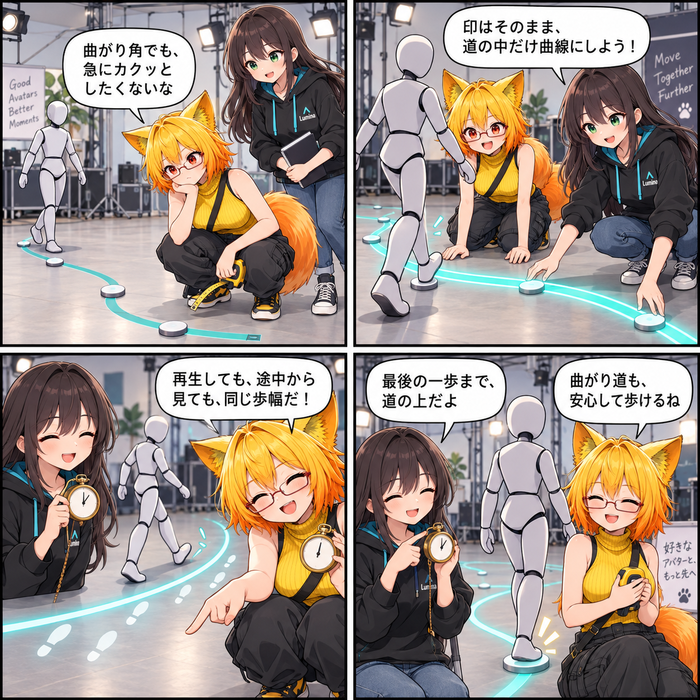

曲がる道でも、歩幅をそろえる日
アバターを決めた経路に沿って動かすとき、折れ線の中継点だけを追うと、角で動きが硬く見えたり、再生位置を移動したときに進み方がずれたりします。今回は経路の内部表現にUnity Splinesを取り入れ、曲線を距離でたどりながら、加速・巡航・減速を同じ計算で扱う土台を追加しました。

中継点を残したまま、内側で曲線にする
外から指定する経路は、これまでどおりワールド座標の中継点です。今回追加したRuntimeSplinePathは、その中継点を外部との約束として維持したまま、内部でUnity Splinesを使って位置と進行方向を評価します。アバターは次の点へ直線的に寄るのではなく、経路上の次の距離サンプルへ向かうため、曲線に沿う移動を扱えるようになります。
到着判定では、距離カーソルが終端へ達した直後も、実際のTransformが終点へ着地するまで補正します。縦方向を追従しない設定も従来どおり利用できます。
再生とシークで、同じ歩幅を使う
移動距離は、加速・巡航・減速からなるゼロ発進・ゼロ停止のプロファイルで時間の関数として計算します。経路が短い場合は、最高速度へ届く前に減速へ移る三角形の速度プロファイルになります。通常再生とVASのシークはこの同じ距離計算と曲線形状を参照するため、途中へ移動したときも別の進み方を作らない構成です。
今回のコミットには、曲線の評価、速度プロファイル、到着、シークに関するエディターテストも含まれています。ここで記しているのはコミット済みソースの内容であり、日記制作時点でUnity実行、VR実機、性能計測、リリース確認は行っていません。
ほかにも進んだこと
同じ期間にはUnity Splines 2.9.1を導入し、エディタ、アバター、UI、ランタイム、コンバーターの大きなクラスを役割ごとのpartialクラスへ整理しました。これは見た目の新機能ではありませんが、移動や変換のように複数の仕組みをまたぐ変更を追いやすくするための保守性改善です。
4コマの裏話
舞台の床に引いた曲線テープを、一定の歩幅でなぞる寸劇です。途中の印は経路の中継点、時計は再生とシークで共有する距離の進め方の比喩で、実際のアプリ画面や実行結果ではありません。
まとめ
アバター移動は、中継点という外部の扱いやすさを保ったまま、内部でスプラインの距離と接線を評価する方式になりました。加速・巡航・減速の距離プロファイルを通常再生とシークで共有し、曲がる経路でも同じ歩幅を扱う土台です。
本日のひとこと
曲がり角ほど、歩幅はそろえて。